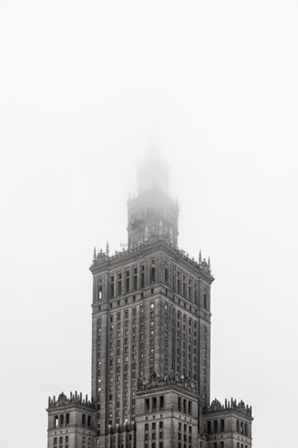
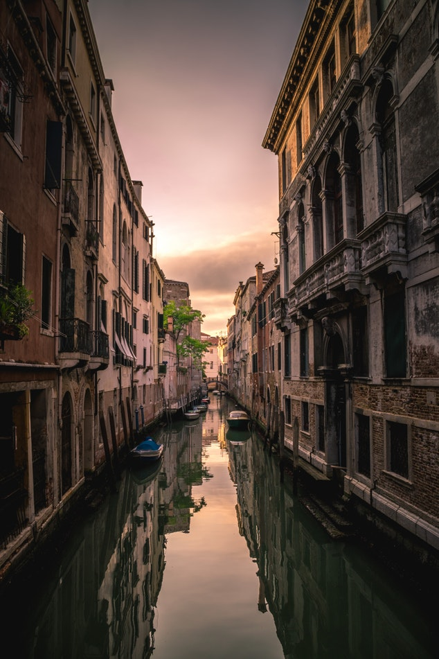
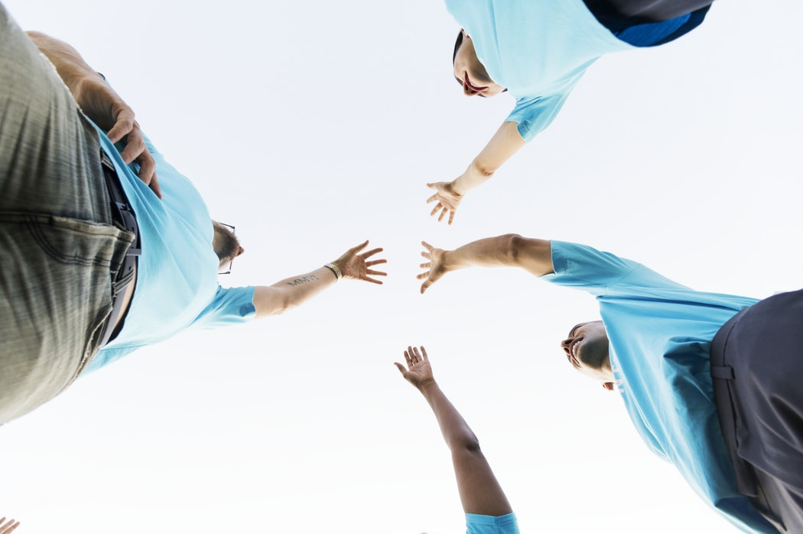
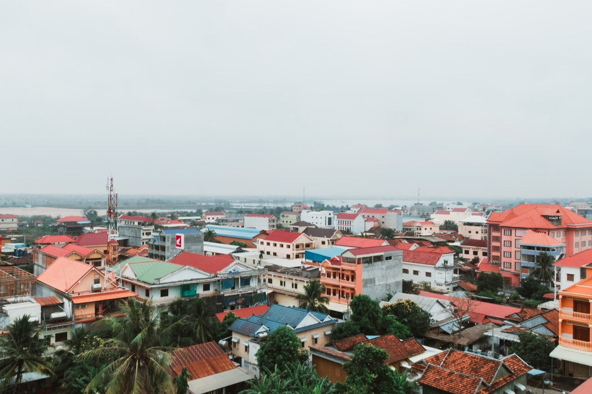
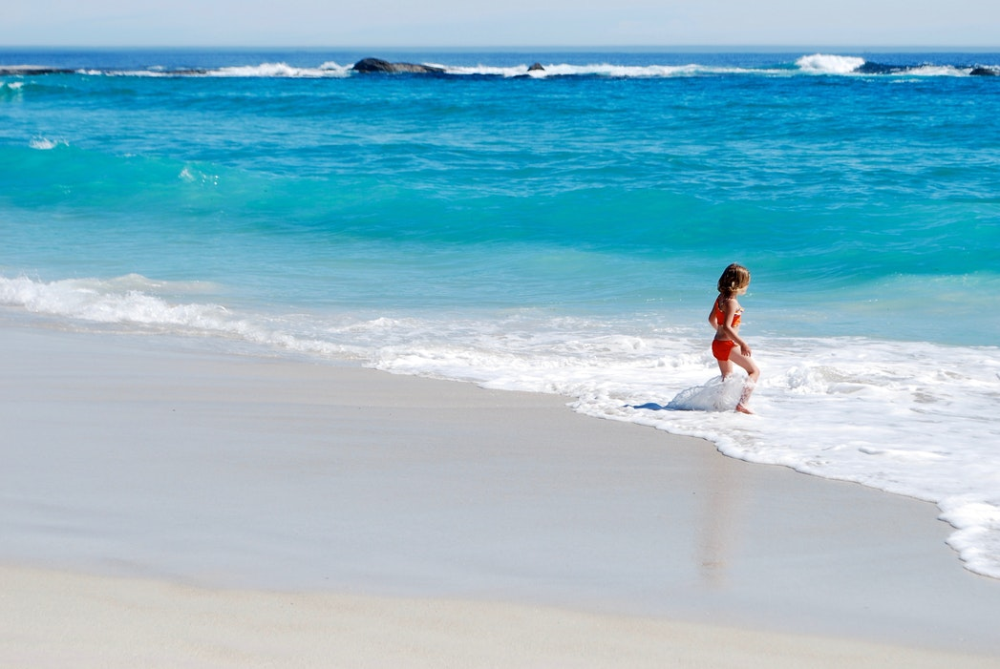
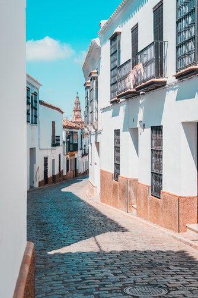

On my transition year trip we visited Krakow in Poland. We visited many tourist attractions such as the concentration camps and cathedrals. One of the main highlights was the indoor aqua park. On our trip we also had night activities such as karaoke and bowling. I didn't particularly like the polish culture ie. the food but I would definitely return again if I had the chance.
I have also traveled to Calcutta where I got to work as a volunteer for two weeks helping the less fortunate with the hope foundation. In Calcutta I got to witness third world problems first hand and it made me realize how lucky we are. I got visit the slums were i was shocked at the grim lifestyle these people live. Together our group raised over five thousand euro.
In recent years on family holidays I have visited Spain, Portugal and France. The climate is hot in the summer months. We visited many water and amusement parks as well as numerous tourist attractions. One of the most important was factors I got the opportunity experience that of different cultures. Family holidays were thoroughly enjoyable something I will never forget.
